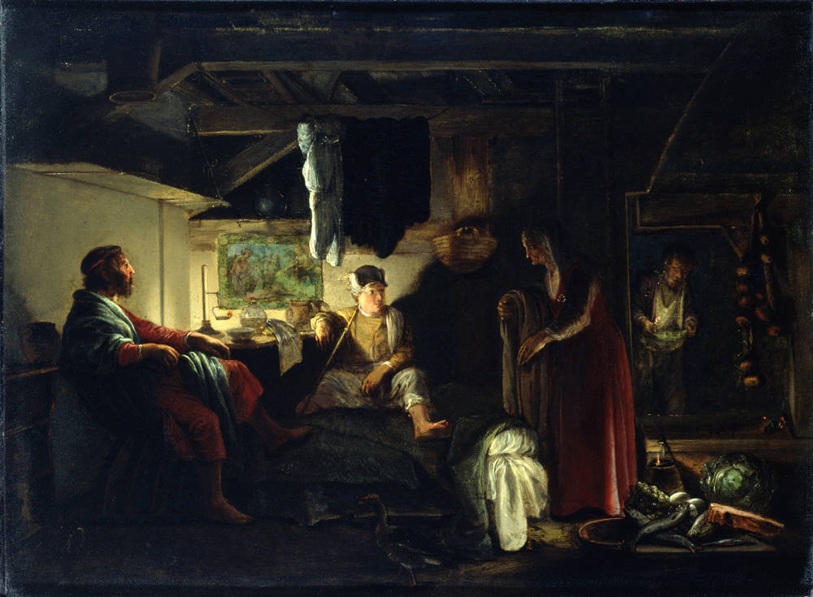
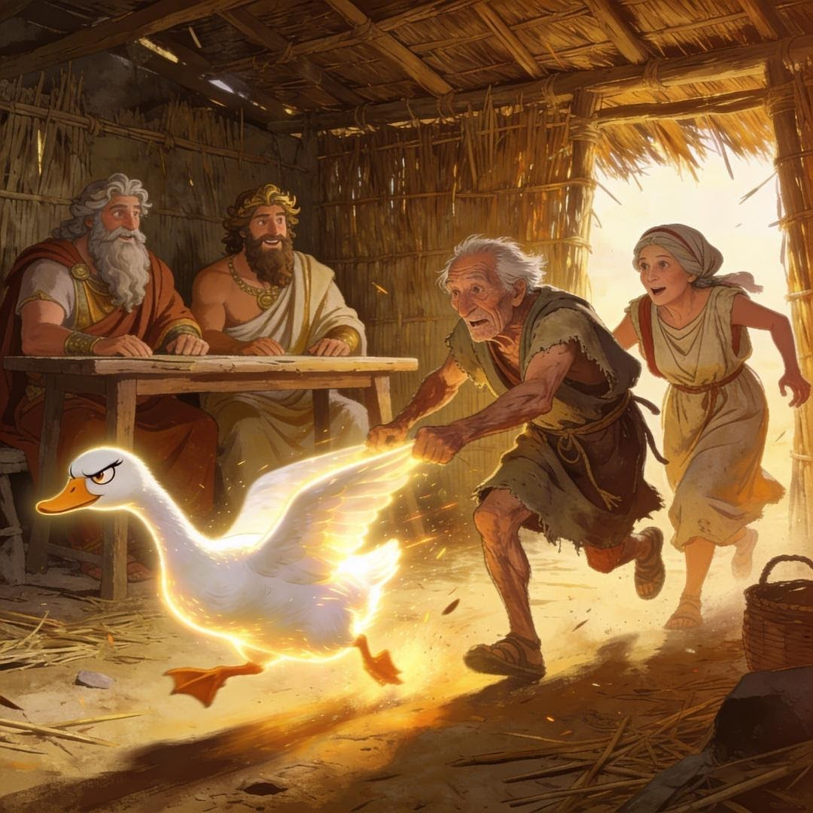

P. Ovidius Naso
Metamorphōsēon · Liber VIII · Versus 684–690
Jupiter und Merkur begeben sich in Menschengestalt auf die Erde, um die Gastfreundschaft der Phryger zu prüfen. An tausend Türen bitten sie vergeblich um Einlass, bis sie schließlich an die bescheidene Schilfhütte des alten, armen Ehepaars Philemon und Baucis klopfen. Die beiden nehmen die Fremden herzlich auf und bewirten sie mit allem, was ihr kleiner Garten und Vorrat hergeben.
Als sich der Weinkrug beim Mahl auf wundersame Weise von selbst füllt und die Götter verhindern, dass das Paar seine einzige Gans für sie schlachtet, geben sich Jupiter und Merkur zu erkennen. Zur Strafe für die Hartherzigkeit der Nachbarn überfluten sie das gesamte Land, verschonen aber das fromme Paar und verwandeln deren alte Hütte in einen prachtvollen Tempel.
Philemon und Baucis werden die Priester des Tempels und äußern den Wunsch, am selben Tag zu sterben, um den anderen nicht begraben zu müssen. Am Ende ihres Lebens verwandeln sie sich mitten im Gespräch in zwei eng verbundene Bäume – eine Linde und eine Eiche.

Adam Elsheimer · Jupiter und Merkur bei Philemon und Baucis · c. 1608–10 · Gemäldegalerie Dresden · Wikimedia Commons (gemeinfrei)
Ovid schreibt in daktylischen Hexametern: jeder Vers besteht aus sechs Füßen. Jeder Fuß ist entweder ein Daktylus (— ∪ ∪) oder ein Spondeus (— —); der sechste Fuß ist stets ein Spondeus oder Trochäus (— ×).
| — ∪ ∪ | | | — — ∪ ∪ | | | — ∪ ∪ | | | — — | | | — ∪ ∪ | | | — × |
| U-ni-cus | an-ser e- | rat, mi-ni- | mae cus- | to-di-a | vil-lae |
| — — | | | — ∪ ∪ | | | — ∪ ∪ | | | — — | | | — ∪ ∪ | | | — × |
| quem dis | hos-pi-ti- | bus do-mi- | ni mac- | ta-re pa- | ra-bant |
| — ∪ ∪ | | | — — | | | — — | | | — — | | | — ∪ ∪ | | | — × |
| il-le ce- | ler pen- | na tar- | dos ae- | ta-te fa- | ti-gat |
| — — | | | — ∪ ∪ | | | — — | | | — — | | | — ∪ ∪ | | | — × |
| e-lu- | dit-que di- | u tan- | dem-qu(e) est | vi-sus ad | ip-sos |
| — — | | | — ∪ ∪ | | | — ∪ ∪ | | | — ∪ ∪ | | | — ∪ ∪ | | | — × |
| con-fu- | gis-se de- | os su-pe- | ri ve-tu- | e-re ne- | ca-ri |
| — ∪ ∪ | | | — ∪ ∪ | | | — ∪ ∪ | | | — — | | | — ∪ ∪ | | | — × |
| di que su- | mus, me-ri- | tas-que lu- | et vi- | ci-ni-a | poe-nas |
| — ∪ ∪ | | | — — | | | — — | | | — — | | | — ∪ ∪ | | | — × |
| in-pi-a | di-xe- | runt vo- | bis in- | mu-ni-bus | hu-ius |
Besonders auffällig ist Vers 686 (ille celer penna tardos aetate fatigat): Der Vers beginnt mit einem schnellen Daktylus (il-le ce-), der die Schnelligkeit der flinken Gans (celer penna) hörbar macht. Unmittelbar danach bremst das Metrum durch drei schwere Spondeen in Folge (ler pen- | na tar- | dos ae-) stark ab. Diese Häufung langer Silben spiegelt die schwerfälligen, langsamen Bewegungen und die Erschöpfung des alten Ehepaares (tardos aetate fatigat) wider. Ovid nutzt hier den Wechsel von schnellem und langsamem Rhythmus, um den komischen Kontrast zwischen der flinken Gans und den erschöpften Alten auch klanglich erlebbar zu machen.
Versus 637/638
ergo ubi caelicolae parvos tetigere penates
submissoque humiles intrarunt vertice postes,
„Kaum hatten die Himmelsbewohner das kleine Haus betreten und mit gesenktem Scheitel die niedrige Tür durchschritten,“
Stell dir vor, du möchtest auf Latein beschreiben, dass eine Handlung stattfindet, während oder nachdem etwas anderes passiert ist – ohne dafür einen normalen Nebensatz mit Bindewort (wie „nachdem“ oder „weil“) zu benutzen. Genau dafür haben die Römer eine sehr kompakte Konstruktion erfunden: den Ablativus absolutus (kurz: Abl. abs.).
Ein Abl. abs. ist gewissermaßen ein versteckter Nebensatz, der in nur zwei Wörtern zusammengepresst ist. Diese beiden Wörter stehen, wie der Name schon sagt, im Ablativ und sind eng miteinander verbunden (= gleicher Kasus, Numerus und Genus).
Er besteht immer aus zwei Teilen:
Wichtig: Das Wörtchen „-que“ (und) in unserer Textstelle hängt zwar an submisso dran, gehört aber nicht zur eigentlichen Konstruktion, sondern verbindet nur den Hauptsatz.
Das lateinische Wort absolutus bedeutet „losgelöst“. Das Nomen im Abl. abs. hat keine direkte grammatikalische Verbindung zum Rest des Satzes. In unserem Satz ist das Subjekt „sie“ (die Götter, caelicolae). Der Scheitel (vertex) aus dem Abl. abs. ist im Hauptsatz weder Subjekt noch Objekt – er steht völlig „losgelöst“ für sich allein.
Da wir im Deutschen keine exakte Entsprechung für diese Konstruktion haben, müssen wir sie „entpacken“.
„...bei gesenktem Scheitel...“ oder „...mit gesenktem Scheitel...“
Genau diese Variante hat auch der Reclam-Übersetzer gewählt.
Da ein PPP steht, ist die Handlung vorzeitig und passiv:
Fazit: Der Abl. abs. ist eine geniale Methode der Römer, um lange Nebensätze in nur zwei Ablativ-Wörtern zu verpacken. Wenn du ein Nomen und ein Partizip im Ablativ direkt nebeneinander siehst, sollten bei dir die Alarmglocken läuten!
| Form | Wort | Analyse |
|---|---|---|
| Nomen | vertice | Abl. Sg. von vertex (Scheitel/Kopf) |
| Partizip (PPP) | submisso | Abl. Sg. von submittere (senken), PPP |
| Verbindung | -que | „und“ – verbindet Hauptsätze, gehört nicht zum Abl. abs. |
| Hauptsatz-Subjekt | caelicolae | Nom. Pl. – die Himmelsbewohner (Götter) |
Versus 684–690
Philemon und Baucis haben ihren Gästen bereits ein bescheidenes Mahl serviert. Doch dann bemerken sie etwas Unheimliches: Der Weinkrug füllt sich von selbst wieder auf! Um den scheinbar mächtigen Gästen etwas Würdiges bieten zu können, fassen die alten Eheleute einen verzweifelten Entschluss…
Ovid nutzt in dem Text einen starken Kontrast, um die Jagd der beiden Alten auf die Gans darzustellen. Finde die beiden lateinischen Wortgruppen, die einander gegenüberstehen, benenne das stilistische Mittel und fasse die inhaltliche Aussage des Verses in eigenen Worten zusammen.
Ovid stellt celer penna (schnell an Federn / die Gans) und tardos aetate (langsam wegen des Alters / die alten Leute) einander gegenüber. Es handelt sich um einen Parallelismus (Adjektiv + Ablativ / Adjektiv + Ablativ), inhaltlich eine Antithese (Gegensatz). Die Szene wirkt fast humorvoll: Die alte, schwerfällige Körperlichkeit der Menschen scheitert an der flinken Natur des Tieres. Ovid zeigt so die körperliche Gebrechlichkeit des Ehepaars.
In den Versen geben die Götter ihr Urteil bekannt. Erkläre, inwiefern hier das Prinzip der göttlichen Gerechtigkeit (Belohnung und Bestrafung) deutlich wird. Beziehe dich dabei auf das Verhalten der Nachbarschaft im Gegensatz zum Verhalten von Philemon und Baucis.
Das Urteil der Götter zeigt eine strikte Trennung: Die Nachbarschaft wird als impia (gottlos) bezeichnet, da sie den Göttern (in Menschengestalt) an tausend Türen die Gastfreundschaft verweigert hat. Dafür erhält sie die „verdiente Strafe“ (meritas poenas), nämlich den Untergang durch die Flut. Philemon und Baucis hingegen haben trotz ihrer Armut alles gegeben und wollten sogar ihr einziges Tier opfern. Aufgrund dieser pietas (Frömmigkeit) bleiben sie als Einzige verschont (inmunibus). Die Szene markiert den Höhepunkt: Die Maske fällt und die ausgleichende Gerechtigkeit wird vollzogen.

„ille celer penna tardos aetate fatigat“
Das Meme greift die wohl humorvollste Szene des Mythos auf: Die Jagd der langsamen alten Eheleute auf die schnelle Gans („celer penna tardos aetate fatigat"). Es passt perfekt zur Kernaussage der Geschichte, denn es verbildlicht die bedingungslose Gastfreundschaft (pietas) von Philemon und Baucis. Obwohl sie bettelarm sind und die Gans ihr einziges wachendes Tier ist, zögern sie keinen Moment, sie für fremde Gäste zu opfern. Die Komik der Situation unterstreicht, dass es den Göttern am Ende gar nicht auf den tatsächlichen Reichtum der Mahlzeit ankommt, sondern allein auf den aufrichtigen und großzügigen Willen („nec iners pauperque voluntas"). Genau dafür werden sie belohnt.